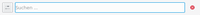

KRunner
Dieser Artikel wurde für die folgenden Ubuntu-Versionen getestet:
Ubuntu 17.10 Artful Aardvark
Ubuntu 16.04 Xenial Xerus
Ubuntu 14.04 Trusty Tahr
KRunner ist ein vielseitig einsetzbares KDE-Programm, welches als Programmstarter, Taschenrechner, Desktopsuche, uvm. verwendet werden kann. Der KRunner wird hauptsächlich über die Tastatur bedient. Suchergebnisse werden über baloo gefunden.
Bedienung¶
Öffnen lässt sich der KRunner über die Tastenkürzel
Alt +
F2 ,
Alt +
oder per Maus mit " -> Befehl ausführen".
Es erscheint eine Eingabezeile, über die nun Begriffe eingegeben werden können. Sobald man mit dem Tippen beginnt, werden mögliche Treffer oder Befehle aufgelistet. Durch die Treffer kann man mit Tabulator und den Pfeiltasten navigieren. Um ein Programm zu starten, kann man
⏎ verwenden oder mit der Maus
-> Befehl ausführen".
Es erscheint eine Eingabezeile, über die nun Begriffe eingegeben werden können. Sobald man mit dem Tippen beginnt, werden mögliche Treffer oder Befehle aufgelistet. Durch die Treffer kann man mit Tabulator und den Pfeiltasten navigieren. Um ein Programm zu starten, kann man
⏎ verwenden oder mit der Maus  auf einen der Treffer klicken.
auf einen der Treffer klicken.
Starten und Beenden von Programmen¶
KRunner wurde ursprünglich als Programmstarter entwickelt. Zum Starten eines Programmes muss man lediglich den Namen, Paketnamen oder Typ eingeben. Beispielsweise wird bei der Eingabe von browser jeder installierte Browser unter "Anwendungen" vorgeschlagen.
Zum Beenden wird das Kommando kill verwendet, welches immer die Auswahl zwischen dem Terminalbefehl kill, welcher eine PID erwartet und Programm beenden anbietet. Bei mehreren Instanzen wird die PID neben dem Programmnamen angezeigt.
Systemüberwachung¶
Bis Kubuntu 14.04 erlaubt KRunner es, auch die Systemüberwachung anzuzeigen. Dazu kann die zweite Schaltfläche verwendet werden.
In allen Versionen lässt sich die Systemüberwachung auch direkt über das globale Tastenkürzel Strg + Esc starten. Die Systemüberwachung zeigt alle Prozesse und deren CPU Last sowie Speicherverbrauch.
| Trefferanzeige im KRunner unter Kubuntu Yakkety |
Module¶
KRunner bietet einige Module, um weitere Funktionalität hinzuzufügen. Um diese zu aktivieren oder deaktivieren, ruft man KRunner wie beschrieben auf und klickt auf das Einstellungen-Symbol .
Hinweis:
Die Möglichkeiten die KRunner mitbringt hängt von der jeweils verwendeten Distribution und Version ab. Es funktionieren nicht auf jedem System alle Module!
Die meisten Module erfordern keine weiteren Einstellungen. Sie werden direkt beim Tippen berücksichtigt. So werden, wenn die Desktop-Suche in den Systemeinstellungen aktiviert wurde, auch deren Ergebnisse in der Trefferliste angezeigt, neben den Treffern für Programme. Einige Module benötigen jedoch auch eine spezielle Syntax, um gestartet zu werden. Hier folgt eine Auflistung der einzelnen Module:
| KRunner-Module | ||||||
| Modul | Schlüsselwort  | Schlüsselwort  | Beispiel | 14.04 | 16.04 | |
| Aktivitäten wechseln | Aktivität | activity | Ergänzungen von krunner in grau | |||
| Befehlszeile Führt Shell-Befehle aus | rsync -avz ~/Dokumente /media/BackupDokumente | |||||
| Desktop-Sitzungen Öffnet eine neue Desktop-Sitzung | Benutzer wechseln | switch user | Benutzer wechseln | |||
| Einheiten-Umwandler | in | 53.5miles in km | ||||
| Hilfeseite aufrufen | help: | help:plasma | ||||
| Manpages aufrufen | man: | man:rsync | ||||
| Kate-Sitzungen Startet existierende Kate-Sitzung | kate | kate Python | ||||
| Konqueror-Sitzungen Startet Konqueror-Profil | konqueror | konqueror | ||||
| Konsole-Sitzungen Startet existierendes Konsole-Profil | konsole | konsole Shell | ||||
| Kontakte E-Mail an Eintrag aus Adressbuch schreiben | Julia | |||||
| Lesezeichen Lesezeichen finden und aufrufen | ubuntuusers | |||||
| Baloo-Desktopsuche | Urlaub 2007 | |||||
| Orte Öffnet Dateien und Adressen | ~/Dokumente | |||||
| Orte Öffnet Lesezeichen für Geräte und Ordner | media | |||||
| PowerDevil Energieprofil auswählen | Energieprofil | power profile | Energieprofil Performance | Mangels Profilen nicht getestet | ||
| Bildschirmhelligkeit ändern | Bildschirm-Helligkeit auf | screen brightness | Bildschirm-Helligkeit auf 30 | |||
| Programme Findet Programme, Anwendungen, Dienste | dolphin | |||||
| Rechner Berechnungen durchführen | = | =sqrt(4) + 32*sin(30*pi/180) | ||||
| Rechtschreibprüfung | spell | spell Hypotenuse (erfordert Wörterbuch) | ||||
| Wort definieren (nachschlagen) | Standard:definieren | definieren Hypotenuse | define | |||
| Webbrowser-Verlauf Suche im Verlauf | forum.ubuntuusers.de | |||||
| Webkürzel Konqueror Webkürzel für z.B. Google- oder Wikipediasuche verwenden | wp:Linux | |||||
| Zuletzt geöffnete Dokumente | meinDokument.pdf | |||||
| KIO-Slaves | sftp://192.168.2.125 | |||||
Zusätzliche Informationen zu einzelnen Modulen¶
Rechner¶
Seit KDE 4.5 beherrscht KRunner auch komplexere mathematische Operationen, wie Ableitungen, das Auflösen von Gleichungen und das Rechnen mit physikalischen Einheiten. Es nutzt hierfür die Qualculate -Programmbibliothek.
Einfache Rechnungen können direkt eingetippt werden. Für Funktionen und erweitere Operationen muss man das Gleichheitszeichen = vorne oder hinten anstellen. Beispiel:
=sqrt(4) + 32*sin(30*pi/180) #oder 220 V / 10 A=
Befehlszeile¶
Nachdem man den Befehl eingetippt hat, kann man über das rechts daneben erscheinende Einstellungen-Symbol den Befehl im Terminal oder auch als anderer Benutzer ausführen lassen.
Zusätzliche Module¶
Darüber hinaus gibt es eine Vielzahl von weiteren Modulen, die spezielle Suchen erlauben. Im Folgenden wird eine kleine Auswahl vorgestellt.
| KRunner-Erweiterungen | |||
| Modul | Beschreibung | Beispiel | Ergebnis |
| Calendar Events | Nach im Kalender eingetragenen Ereignissen suchen (nur Kalender, die Akonadi nutzen). | ||
| Datum und Zeit | Datum oder Zeit erfragen | date bzw. time | Das heutige Datum ist: Samstag, 8. März 2014 bzw. Die aktuelle Zeit ist: 12:50 |
| Kontakte | Einträge im Adressbuch suchen (nur Adressbücher, die Akonadi nutzen). | ||
| Medienwiedergabe steuern | Ermöglicht die Steuerung von MPRIS-Medienspielern wie Amarok. | ||
Falls noch nicht vorhanden, muss folgendes Paket installiert [1] werden:
plasma-runners-addons
 mit apturl
mit apturl
Paketliste zum Kopieren:
sudo apt-get install plasma-runners-addons
sudo aptitude install plasma-runners-addons
Programme mit KRunner installieren¶
Wenn das Modul Installationsprogramm aktiviert ist, kann der Name eines Programms in Krunner eingegeben und per Mausklick auf das Ergebnis installiert werden. Das Modul wird mit dem folgenden Paket installiert [1]:
plasma-runner-installer
mit apturl
Paketliste zum Kopieren:
sudo apt-get install plasma-runner-installer
sudo aptitude install plasma-runner-installer
Instant Messenger¶
Das Modul Instant-Messenger-Kontakte erlaubt es, nach Kontakten in einem Telepathy- oder Kopete-Instant-Messenger zu suchen und per Klick auf das Ergebnis einen Chat zu beginnen. Es kann mit einem der folgenden Pakete installiert [1] werden:
plasma-runner-telepathy-contact
mit apturl
Paketliste zum Kopieren:
sudo apt-get install plasma-runner-telepathy-contact
sudo aptitude install plasma-runner-telepathy-contact
oder
plasma-runner-kopete
mit apturl
Paketliste zum Kopieren:
sudo apt-get install plasma-runner-kopete
sudo aptitude install plasma-runner-kopete
Konfiguration¶
KRunner-Sucheinstellungen werden über das Einstellungen-Symbol eingestellt. Die Einstellungen befinden sich ebenfalls unter "Systemeinstellungen - Suche" und werden zwischen "Plasma-Suche" und "Dateisuche" unterschieden. Einzelne Komponenten, wie beispielsweise "Medienwiedergabe steuern" oder das "Beenden von Programmen" können konfiguriert und die Schlagworte angepasst werden.
Ansichten (bis 14.04)¶
KRunner unterstützt eine befehls- und eine aufgabenorientierte Ansicht. Man wechselt zwischen beiden, indem man KRunner aufruft, auf das Einstellungen-Symbol klickt und dort den Reiter "Benutzerschnittstelle" wählt.
Verlauf löschen¶
Der Verlauf kann ab Kubuntu 16.04 über den Einstellungen-Symbol gelöscht werden.
Problembehebung¶
Dateisuche funktioniert nicht¶
Sollte baloo deaktiviert sein, funktioniert die Dateisuche nicht. Um die Suche zu aktivieren, muss baloo aktiviert werden.
PowerDevil¶
In älteren Versionen von KRunner gibt es einen Bug, der es nötig macht, ein zusätzliches Wort hinter das eigentliche Schlüsselwort zu setzen.
Links¶
extern¶
sciencekde
- Beispiele zur erweiterten Benutzung des Rechners in KRunnerLancelot - Ein alternativer Programmstarter
- Erstellt mit Inyoka
-
 2004 – 2017 ubuntuusers.de • Einige Rechte vorbehalten
2004 – 2017 ubuntuusers.de • Einige Rechte vorbehalten
Lizenz • Kontakt • Datenschutz • Impressum • Serverstatus -
Serverhousing gespendet von